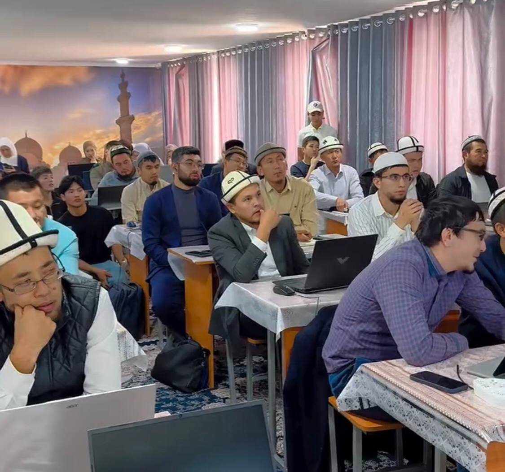

🎯
Так максат
Окуучуларды санариптик сабаттуулуктан IT кесибине багыттоо.
IT ADIS — медреседе билим алган жаштарга заманбап технологияларды үйрөтүп, келечекте IT тармагын кесип катары тандоого мүмкүнчүлүк берген практикалык окуу программасы.

IT ADIS окуу борборунун негизги максаты — медреседе окуган балдарга заманбап технологияларды үйрөтүп, аларды келечекте IT тармагында кесип катары өнүгүүгө даярдоо.
Окуучуларды санариптик сабаттуулуктан IT кесибине багыттоо.
Ар бир темада компьютер менен иштөө жана практикалык тапшырмалар.
Заманбап технологиялар жана AI инструменттери менен иштөөнү үйрөнүү.
Заманбап IT инструменттеринен программалоого жана жасалма интеллектке чейин.
Браузерди туура колдонуу, издөө, аккаунттар жана интернет коопсуздугу.
Электрондук почта, кат жөнөтүү, файлдар, Google Drive жана профессионалдык кат алышуу.
Код редактору, файлдар, папкалар, extensions жана биринчи долбоор.
Python программалоосунун негиздери, өзгөрмөлөр, шарттар, циклдер жана практикалык код.
Git, repository, commit, push, pull жана GitHub менен долбоорлорду башкаруу.
Windows Terminal жана CMD аркылуу командалар менен иштөө.
AI менен туура иштөө, prompt жазуу, текст, идея жана код генерациялоо.
AI моделдерин колдонуу, кодду анализдөө жана программалоодо AI жардамын колдонуу.
AI жардамында идеядан иштеген веб-сайтка чейин долбоор түзүү.
Курстун жыйынтыктоочу экзамени. Ийгиликтүү аяктаган окуучуларга сертификат берилет.
Медреседе билим алган жаштар заманбап технологияларды да өздөштүрүп, диний жана жалпы билим менен катар IT тармагында да өз мүмкүнчүлүктөрүн ачсын.
Код иштеп жатабы? Тийбе!
10 күндүк окуудан кийин катышуучулар жыйынтыктоочу экзамен тапшырышат. Курсту ийгиликтүү аяктаган окуучуларга сертификат берилет.